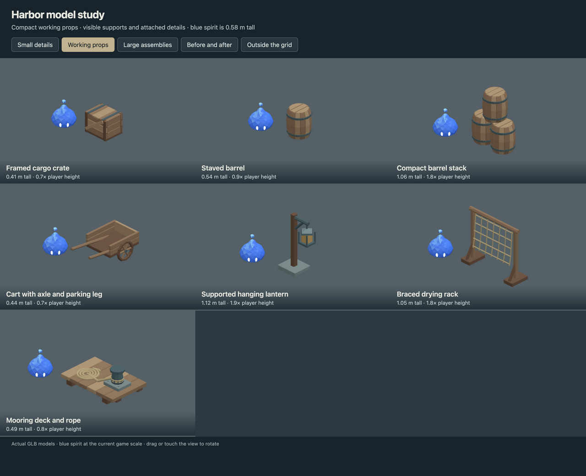
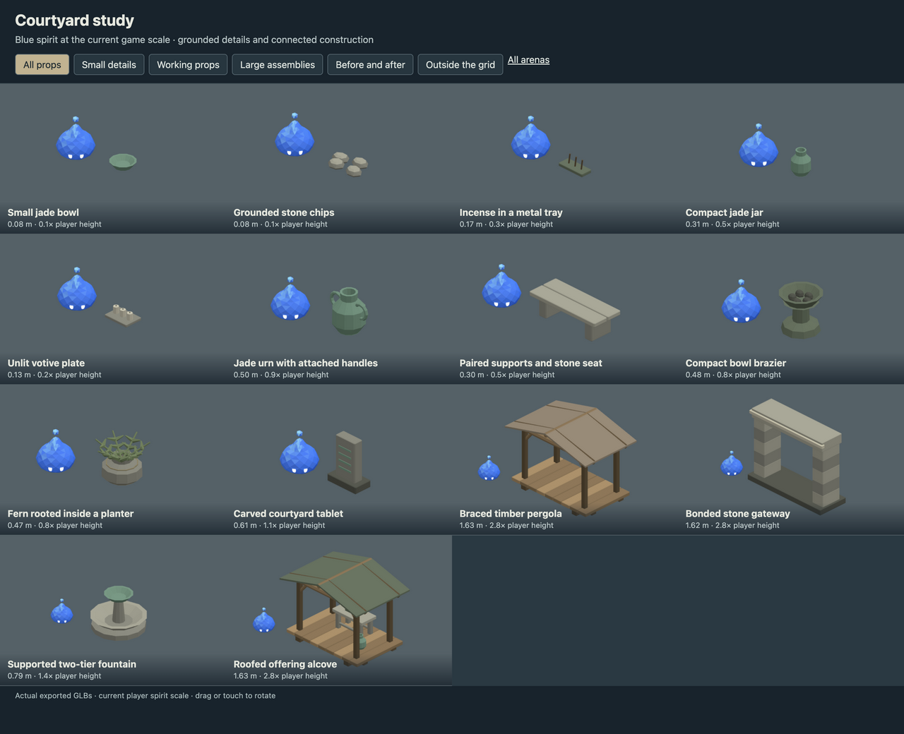
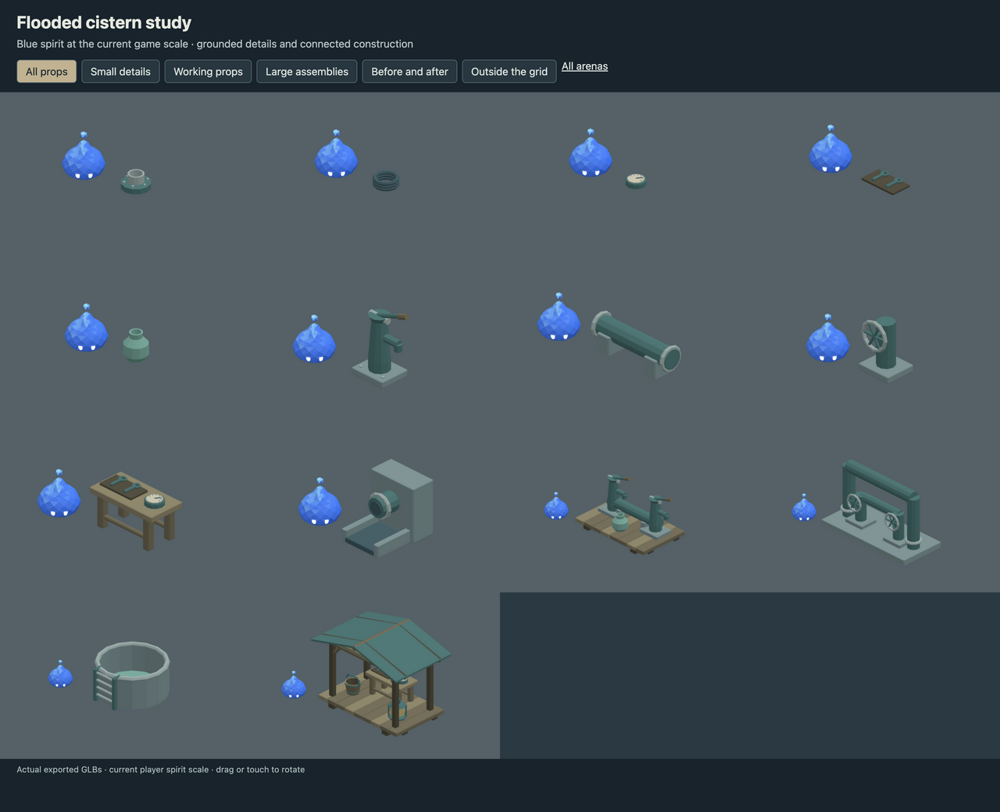
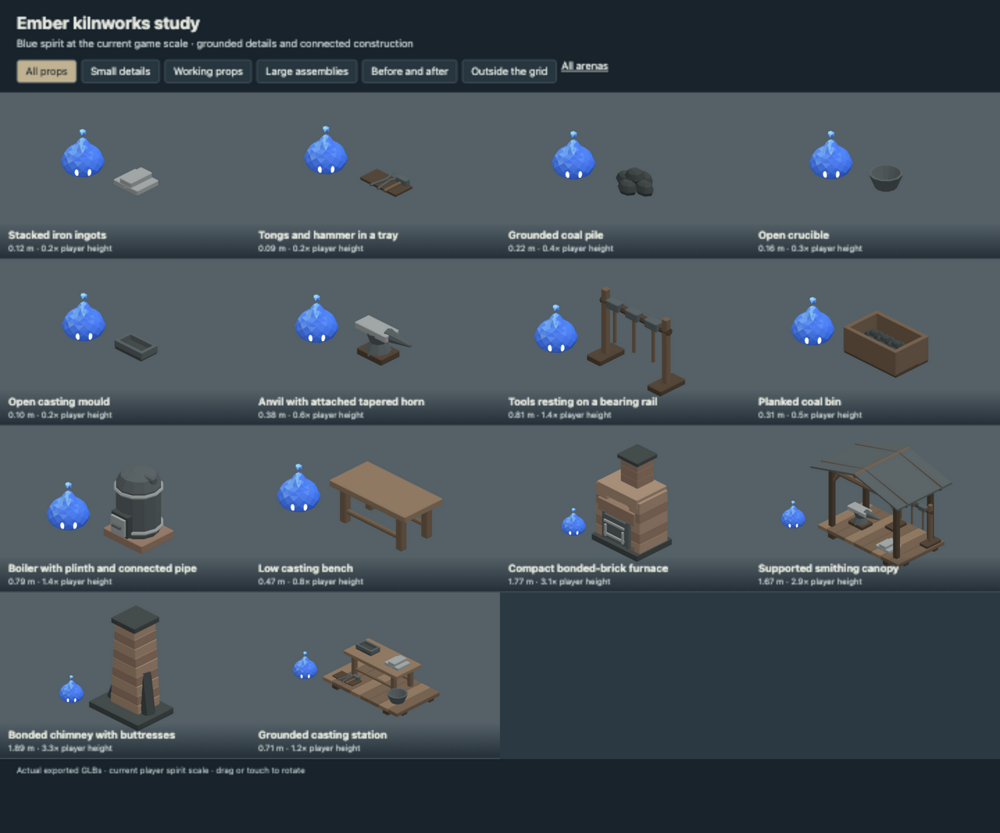

Saltwind harbor scale study
17 models. Feedback study with connected small props and supported exterior dock assemblies.
Exterior layoutConnected construction, everyday prop scale and supported perimeter assemblies. Every sheet uses the current player spirit as a reference.

17 models. Feedback study with connected small props and supported exterior dock assemblies.
Exterior layout
14 models. Reduced jade urn and brazier proportions beside the current spirit. Added small ritual details, a low bench and rooted planter. Added supported pergola, gateway, fountain and offering alcove for the perimeter.
Exterior layout
14 models. Rebuilt pump handles, wheel spokes and pipe supports at everyday prop scale. Added repair fittings, gaskets, dial gauges, tools and water jars. Added connected pump bank, manifold, settling tank and roofed service station outside the grid.
Exterior layout
14 models. Reduced the furnace, boiler, anvil and tool proportions beside the spirit. Added ingots, tongs, coal, open crucibles and casting moulds. Rebuilt furnace piers and chimney supports; added smithing and casting bays outside the grid.
Exterior layout